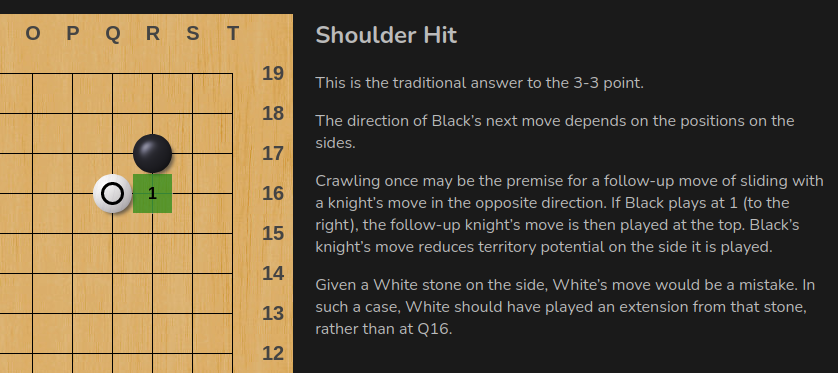
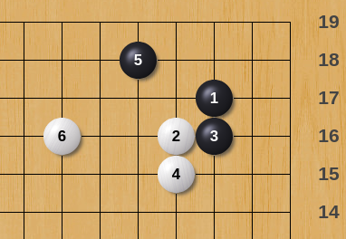
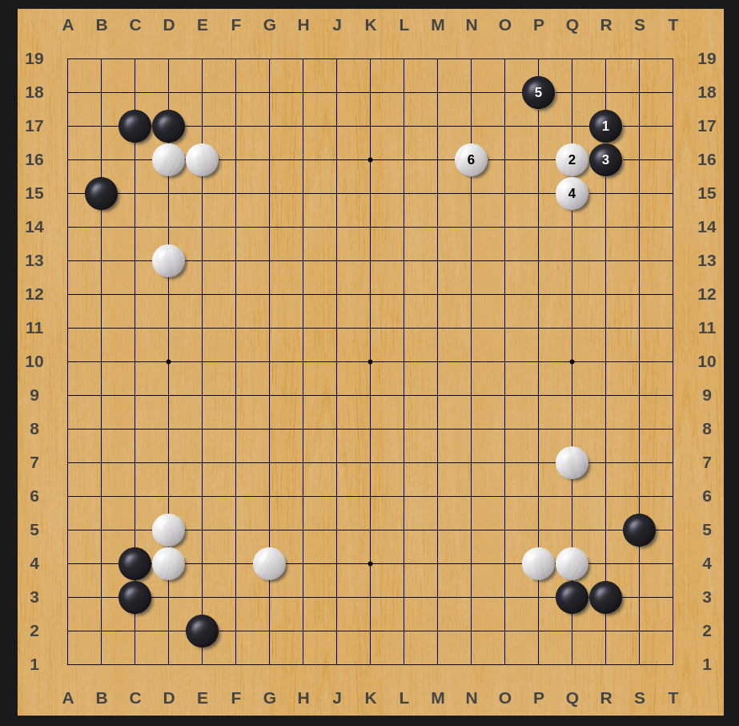
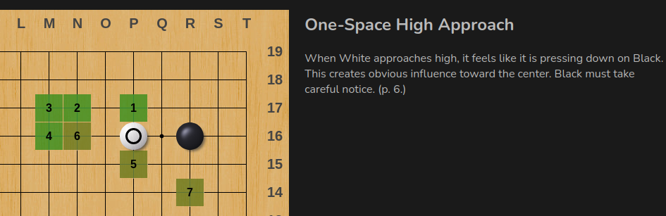
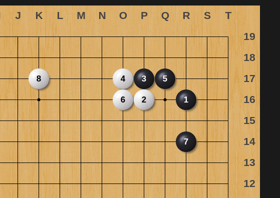
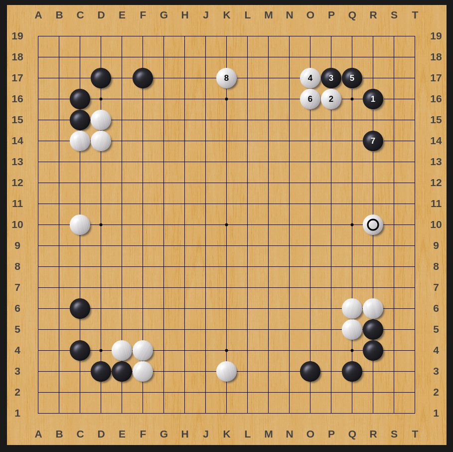
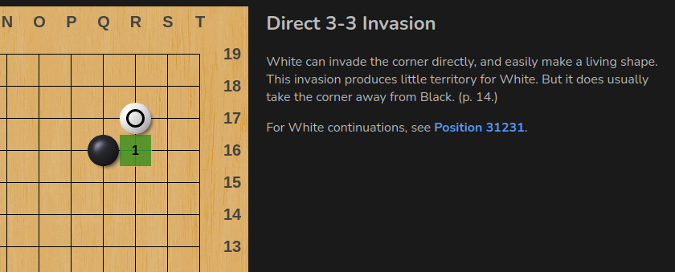
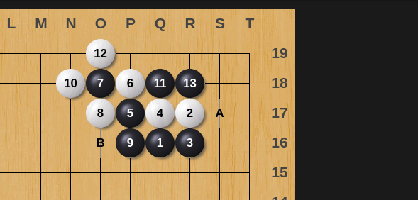

Go Joseki
3-3 Joseki
sansanThe 3-3 point emphasizes territory and speed (settling the corner in one move) over influence. Its weakness is the lack of obvious local follow ups. The number of 3-3 point josekis is very limited, so they are easy to learn. It aims for a close and complicated (i.e. fighting) game without big territories, where the corner territory secured with the 3-3 point may prove decisive. It is particularly popular for white as komi is a bigger advantage when neither player has much territory.
- From sensei's library- From OGS Joseki
Overview

3-3 Point Shoulder Hit
More at Sensei's Library
3-3 Point Shoulder Hit
Variation 1
In this joseki, White is making outside influence, while Black goes for the corner territory. Next, the jump at 6, continuing to emphasize the outside, is White's most common move.
Playthrough
All Corners
3-4 Joseki
komoku- From OGS Joseki
The 3-4 point (aka komoku or 'small eye') emphasizes a balance of territory and influence. It looks forward to development along one side of the board and/or forming a corner enclosure. For many centuries, the 3-4 point has been the most common way to start a game. In modern go, it is one of the most popular openings and is well-regarded by strong AI programs like AlphaGo.
- From sensei's library3-4 Point One Space High Approach
More at Sensei's Library
3-4 Point One Space High Approach
Variation 1
Drawing back (hiki) is solid shape and secures the corner territory for Black. Typically, White will defend their cutting point with either a solid connection or a hanging connection.
Playthrough
All Corners
4-4 Joseki
hoshiThe 4-4 point (aka hoshi or 'star point') emphasizes influence, speed, and flexibility. Compared with the 3-4 point or 3-3 point, the corner can still be invaded and the territory is not secure. In modern go, it is one of the most popular openings and preferred by strong AI programs like AlphaGo.
- From sensei's library- From OGS Joseki
4-4 Point Direct 3-3 Invasion
More at sensei's library
4-4 Point Direct 3-3 Invasion
Variation 1
Black takes the corner in gote (about 10 points). The captured stones leave a lot of aji if White continues with A or B.
3-5 Joseki
mokuhazushi- From OGS Joseki
4-5 Joseki
takamoku- From OGS Joseki
Resources
Books
Elementary Go Series - In the Beginning
This book about openings (fuseki), In The Beginning, is the first volume in the Elementary Go Series, published originally by Ishi Press and later republished by Kiseido. The author is Ishigure Ikuro.
link to sensei's libraryVideos
Full video at NYIG GO
Full video at Go Pro Yeonwoo